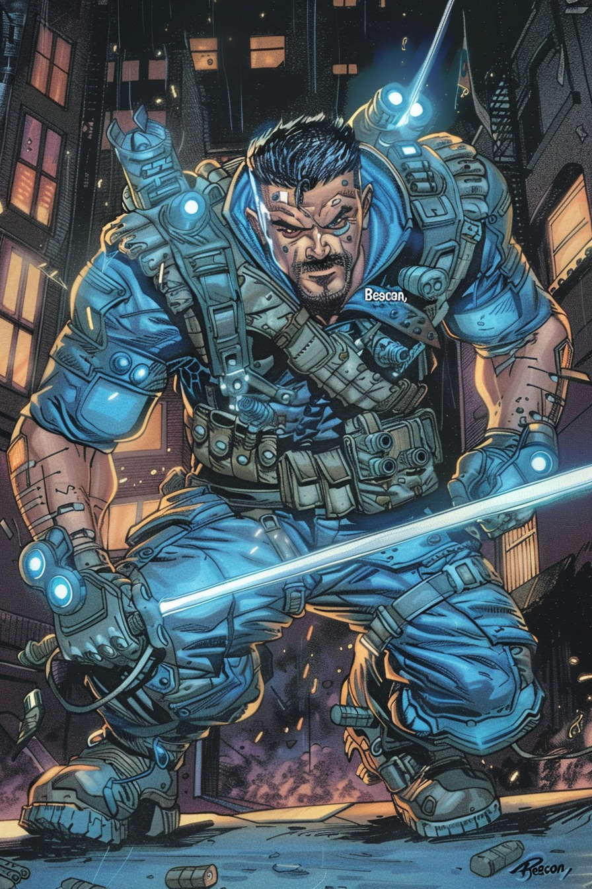

BEACON: LIGHT IN THE DARKNESS

Samuel Revere grew up in the shadows of Boston's historical landmarks, a direct descendant of the famous patriot. His childhood home in the North End stood just blocks from Old North Church, where lanterns once signaled the British approach. Sam's father, Thomas Revere, worked as the lead security consultant for Boston's historic sites, teaching his son the value of vigilance from an early age.
Unlike his storied ancestor, Sam was naturally reserved. He preferred observation to action, developing an uncanny awareness of his surroundings. His mother, Dr. Diana Revere, a neurologist specializing in sensory processing, recognized her son's heightened perceptual abilities early on. She helped him develop techniques to manage the overwhelming sensory input that often left him disoriented in crowded spaces.
Sam's path changed during his sophomore year at Boston University. While working late at the university library, he noticed subtle signs of an infiltration – tiny pressure changes in the air, almost imperceptible sounds of movement in the rare manuscript room. Without thinking, he triggered the silent alarm and tracked the intruders through the darkened building. Campus security arrived to find Sam had already identified the thieves' escape route and documented key evidence.
The attempted theft wasn't random – the manuscripts contained Revolutionary War-era coded messages never fully deciphered. The incident caught the attention of Laura Philips, curator of the Paul Revere House and secretly a retired intelligence operative. She recognized Sam's potential and offered him an internship that became his cover for specialized training.
Under Laura's guidance, Sam learned to weaponize his awareness. He trained with former special forces operators in urban movement, developed a comprehensive knowledge of Boston's infrastructure, and mastered the use of light-based tools. His natural ability to read environmental cues evolved into a form of tactical precognition – not true foresight, but an ability to process sensory data so quickly it seemed supernatural.
The final piece fell into place during a terrorist attempt to bomb the Freedom Trail during Patriots' Day. Sam, now working security for the celebrations, detected the threat minutes before it was set to detonate. As he evacuated civilians, a secondary explosion knocked him unconscious.
He woke in darkness, pinned under debris, with smoke filling his lungs. Something had changed – he could perceive light in ways that defied normal human vision. He sensed the thermal radiation of bodies beyond walls, detected the subtle UV signatures of emergency exit signs through layers of concrete, and navigated through total darkness using the faint photonic rebounds of distant light sources.
Sam used these newfound abilities to guide survivors to safety before collapsing from smoke inhalation. While recovering in the hospital, he was approached by Liberty, who had observed his actions. She offered him a place among the Minutemen, a chance to use his unique capabilities to protect the city he loved.
As Beacon, Sam serves as the team's eyes and ears. His tactical equipment amplifies his natural abilities – specialized lenses enhance his light perception, while his staff incorporates advanced illumination systems. He can track targets through crowded streets, identify weak points in enemy positions, and create disorienting light patterns to confuse opponents.
Yet despite his capabilities, Sam remains haunted by those he couldn't save during the bombing. He pushes himself to detect threats earlier, move faster, see what others miss. His apartment walls are covered with maps of Boston marked with potential vulnerabilities. His family worries about his intensity, though they don't know about his vigilante activities.
On patrol, Beacon is methodical and precise, the counter to Liberty's passionate directness. He often serves as the team's tactical coordinator, his heightened perception allowing him to guide teammates through complex engagements. When not on missions, he works as a security consultant for historic sites throughout Boston, using his day job to monitor potential threats to the city's landmarks and gather intelligence on suspicious activities.
In a team of more visibly powerful members, Beacon's strength lies in knowing exactly where to be and what's about to happen moments before anyone else. As he often reminds the team: "The warning is as important as the response."